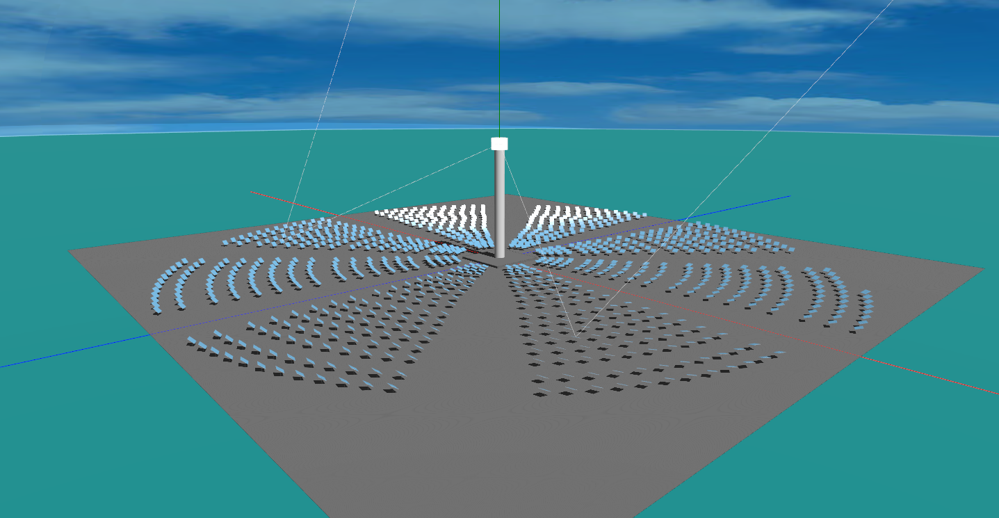
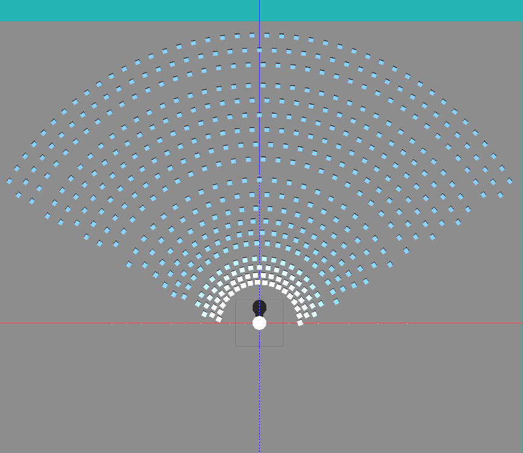
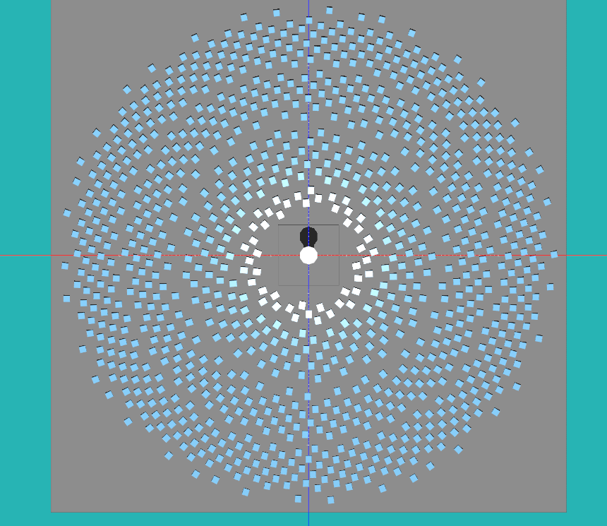
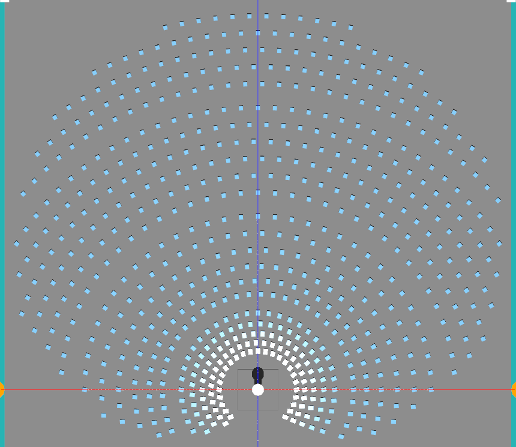
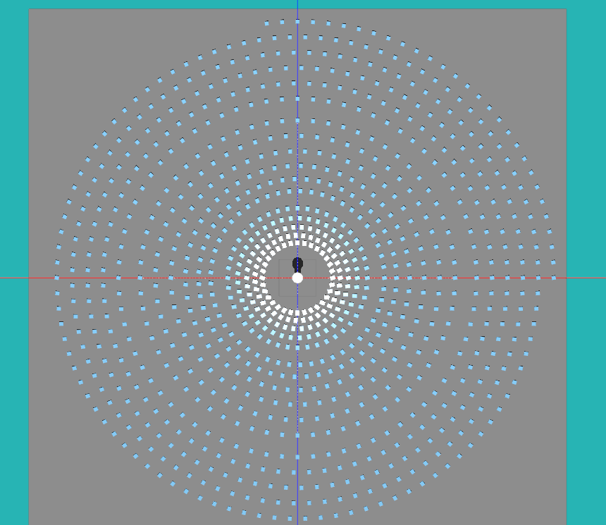
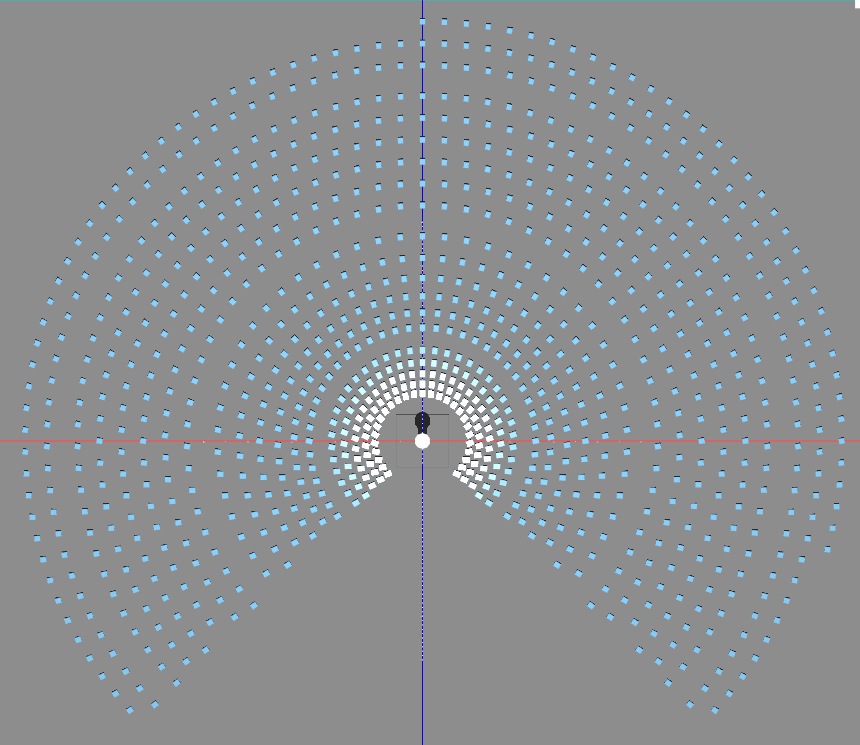
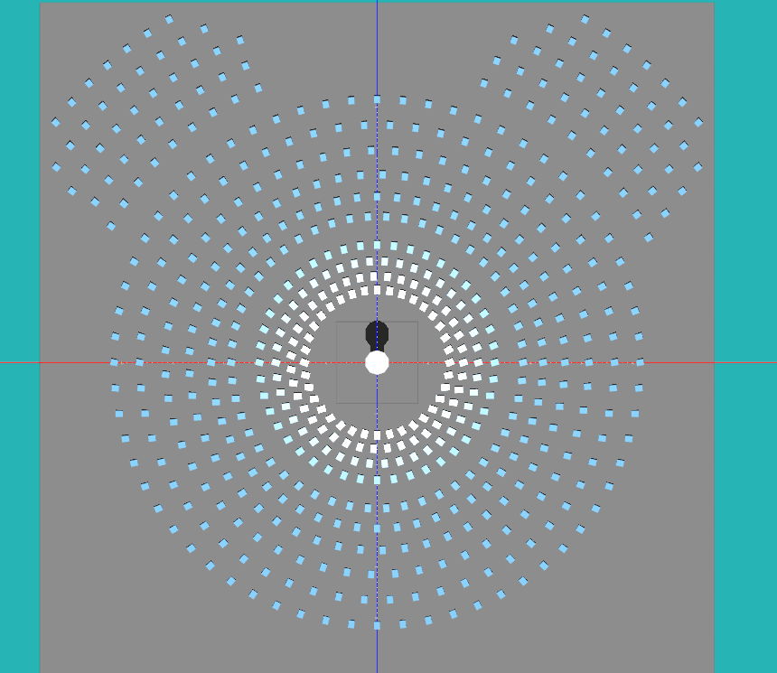
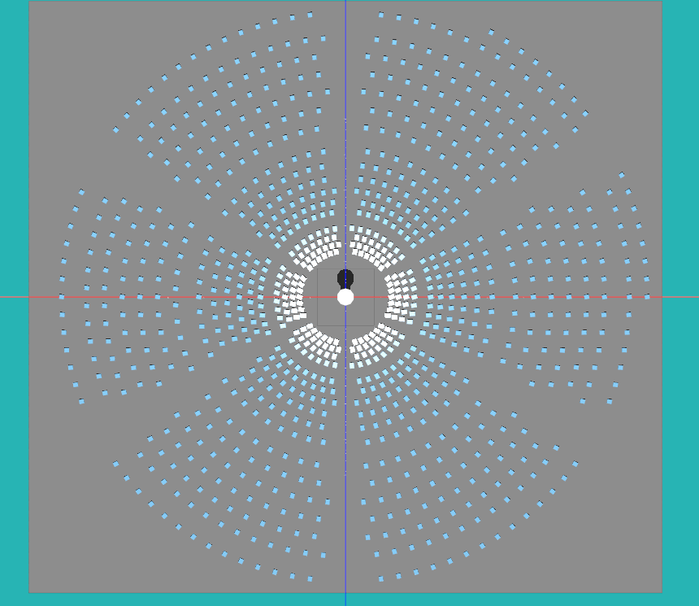
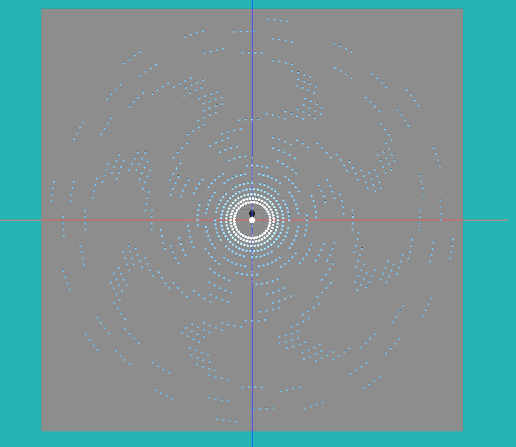
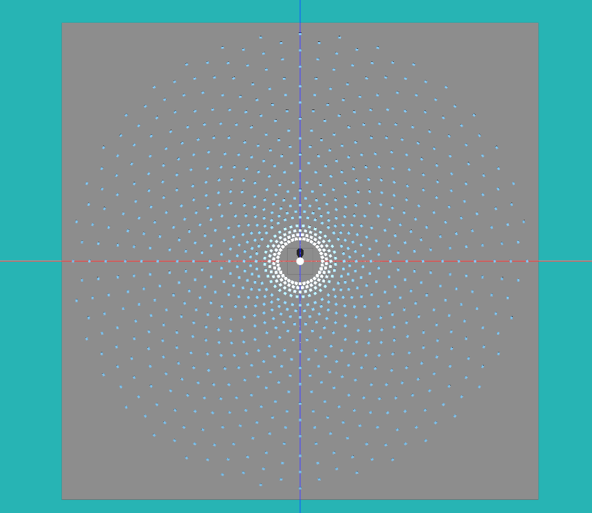

Using GenAI to Design Solar Power Towers
By Charles Xie ✉ and Xiaotong Ding ✉
One of the research questions that the Aladdin platform aims to answer is how generative AI based on large-language models (LLMs) can be used to tackle engineering design challenges. In this article, we focus on how GenAI can assist the design of solar power tower plants. Our first step is to study how GenAI can generate different layouts for the heliostat field. Once a layout is generated, we can then use the numerical simulation engine of Aladdin to analyze its output. Note that, given the exploratory nature of our research, the layouts presented in this article are not necessarily optimal or practical from the engineering point of view. They should be regarded more appropriately as conceptual design.
An advantage of using GenAI in Aladdin — a CAD platform — is that it can translate users' abstract ideas expressed in natural languages into concrete designs visualized as interactive 3D models instantaneously. For example, the following image shows the result when we asked GenAI to create a layout that resembles a bagua formation (八卦陣).

An AI-generated bagua formation layout for the heliostat field
Aladdin supports multiple AI engines (currently Claude and OpenAI). To generate the above layout, we chose Claude Opus-4.5. Our prompt is copied below:
Set the location to Tucson, AZ. Generate a solar power tower with a concentric circular layout for 1000 heliostats. Then remove some heliostats so that the shape of the whole field looks like a full bagua. Distance between adjacent rings should increase by 10% as ring number increases.
Distance between heliostats in a ring should also increase by 10% as ring number increases. Maximum distance should not exceed 25m. Heliostats must not overlap. Leave an empty circular area around the tower, with a radius 6 times of the tower radius. Add a gap of 10 meters every 6 rings.
The width and length of each heliostat are 8 and 8 m. The radius and height of the tower are 8 and 170 m.
As engineers, we already have some basic knowledge about heliostat fields (e.g., the density of heliostats should gradually decrease as they are further away from the tower for cost effectiveness and there should be space for maintenance vehicles to move around), which is reflected in the prompt. We asked AI to return its thinking process for generating the solution, which is copied as follows:
The user wants a Bagua-shaped heliostat field layout. A Bagua has 8 trigrams arranged in an octagon pattern. I need to:
1. Create concentric rings of heliostats
2. Remove heliostats to create the Bagua pattern (8 sections with gaps between them)
3. Distance between rings increases by 10% per ring
4. Distance between heliostats in a ring increases by 10% per ring
5. Max distance 25m
6. Empty area around tower with radius 6 * tower radius = 6 * 8 = 48m
7. Add 10m gap every 6 rings
8. Heliostat size: 8x8m
9. Tower: radius 8m, height 170m
10. ~1000 heliostats total
For Bagua pattern:
- 8 sections (trigrams)
- Each section covers 45 degrees (360/8)
- Need gaps between sections to create the Bagua look
- The gaps should be visible lines radiating from center
Let me design the function:
- Start with ring at radius = 48m (6 * 8m tower radius)
- Base spacing between rings ~10m, increasing by 10% each ring
- Base spacing in ring ~10m, increasing by 10% each ring
- For Bagua: remove heliostats in 8 narrow wedges (the lines between trigrams)
I need to calculate how many rings and heliostats per ring to get ~1000 total.
Let me think about the Bagua gaps:
- 8 sections, so gaps at angles: 0°, 45°, 90°, 135°, 180°, 225°, 270°, 315°
- Each gap should be narrow, maybe 5-10 degrees wide
Actually, for a "full bagua" shape, I should have 8 equal sections with small gaps between them.
Judged from its reasoning above, AI seems to understand the task very well. After some wait time, it sends a solution back to Aladdin for rendering and you get a live 3D model with which you can view, analyze, and evaluate further.
The following images show some AI-generated layouts:









Some AI-generated layouts for heliostat fields
Some of these layouts were simply driven by random curiosity. For instance, we were just curious about how a pattern like the Mickey Mouse, fire wheel, or bagua formation might look like. Without GenAI, the time cost for satisfying our curiosity may be too high to bear. With GenAI removing this barrier for substantiating any ideas — however absurd they may sound at first hearing, innovative designs could perhaps germinate from the seed of intellectual curiosity more easily.
If you would like to explore these AI-generated designs yourself, use the following embedded window that displays them in a project gallery. Double-click a thumbnail image in the gallery to load the corresponding 3D model for viewing and interactions.
Live window above (view in full screen) — Chrome or Edge recommended
Note that in order to use GenAI in Aladdin, you must create an Aladdin account and create a project of your own. Then you can use GenAI to add new designs to your projects.
The next step is to integrate GenAI (for solution generation) and genetic algorithms (for solution optimization) in Aladdin.
GenAI can propose novel, complex design variations like the heliostat layouts shown in this article. Genetic algorithms can then select optimal solutions that meet the specified criteria and constraints.